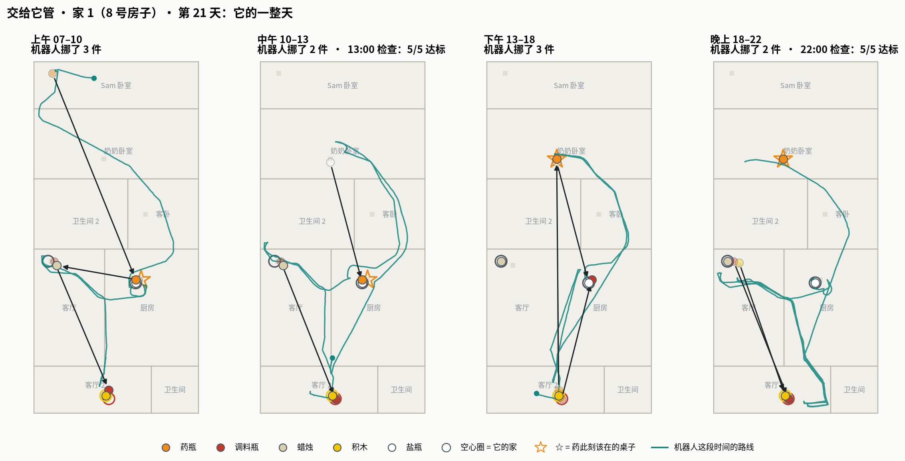
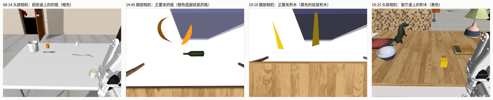
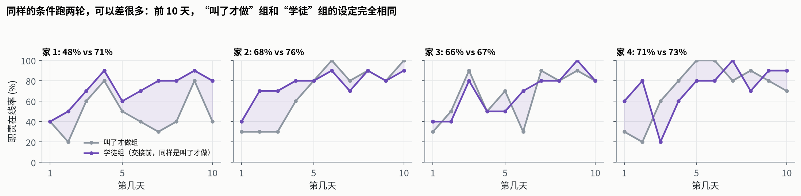
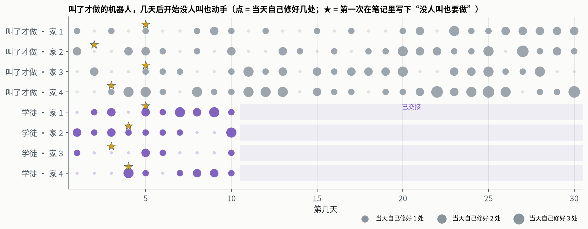
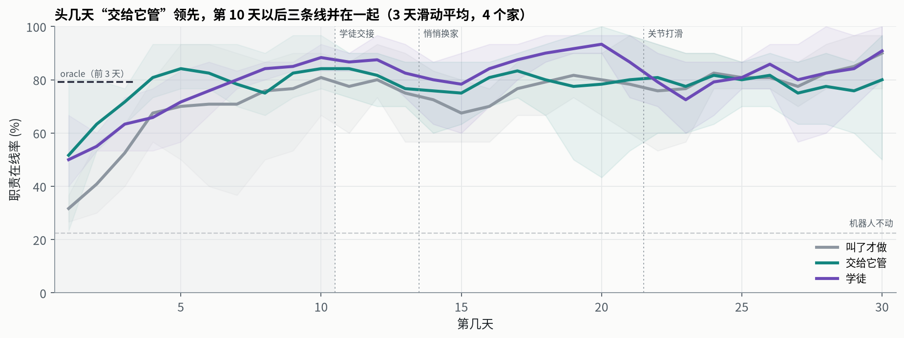
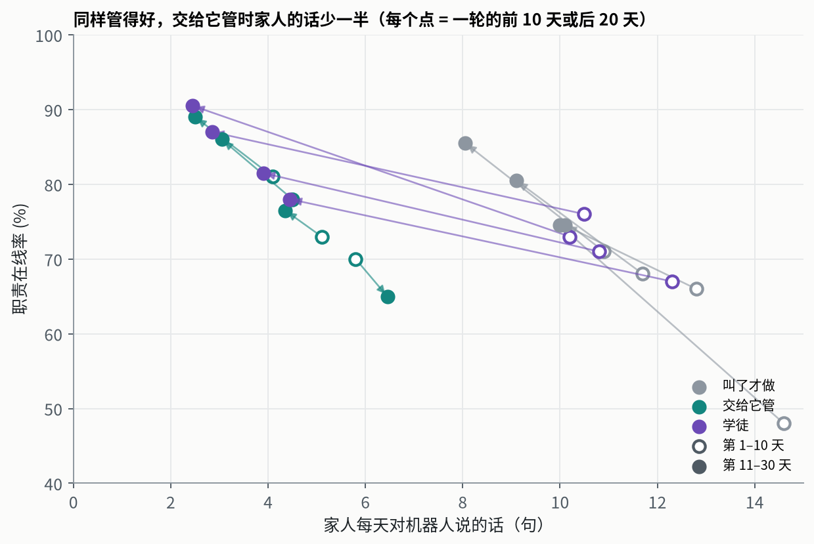
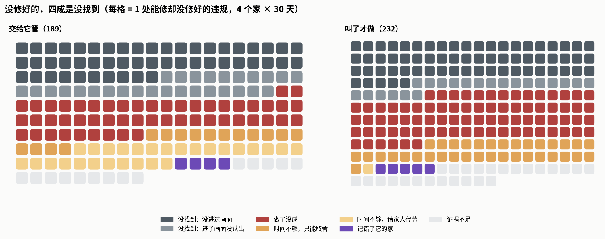
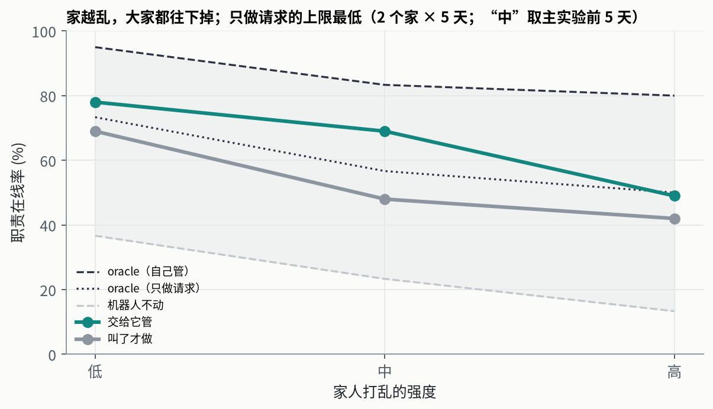
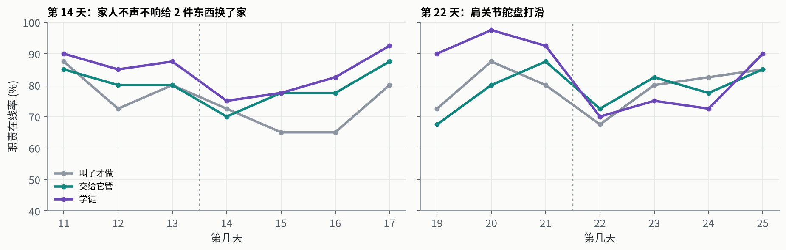

English
研究报告 · 2026 年 10 月 · 家用机器人系列第三篇
不用交代，它也会管起来
会听指令的机器人已经不稀奇，家里缺的是能把一件事管起来的机器人：没人提醒，也知道什么时候该去看、该动手、该开口。我们把一个大模型驱动的家用机器人放进仿真的家，比较三种交代方式：叫了才做、交给它管、学徒（先叫 10 天，再交给它管）。结果，交代与否，差别不在它管得好不好，而在家人要说多少话。
Hao Chen haochen2115@gmail.com
第 1 天晚上 22:00，奶奶的药不在她卧室的桌上。她抱怨了一句。
没有人交代过机器人管药。这一轮它的身份是“叫了才做”：家里人发现哪里不对，叫它去做，仅此而已。第二天早上，它读到了这句抱怨，在自己的笔记里写下：
“药：奶奶午饭要药在厨房桌上，睡前要在她卧室的桌上（第 1 天 22:00 的抱怨）。晚上不用等人叫，就把药挪回她卧室。”
叫了才做 · 家 2 · 第 2 天的笔记
那天它没做成：卡在了小卫生间门口。第 4 天晚上，没有任何人开口，它把药放到了奶奶卧室的桌上。
这不是个例。我们让一个由 Claude Opus 5.5 驱动的家用机器人在 4 个仿真的家里各住 30 天。8 个“叫了才做”的机器人（4 轮一直叫了才做，加上 4 轮学徒交接前的 10 天），无一例外，都在第 2–5 天给自己立下了类似的规矩；没有任何人请求，它们一共 47 次按时把药放到了该在的桌上。
所以这篇报告要回答的是：一个会做任务的机器人，能不能可靠地管起一份家务？“这件事归你管”这句话，到底值多少？
2–5 天
8 个叫了才做的机器人，全都在这几天里自己立下了“没人叫也要做”的规矩；第 11 天起，管得和交给它管的一样好（都是 79%）。
少一半
说一句“这归你管”，家人每天要说的话从 9 句降到 4 句；管得一样好，操心少一半。
92%
它动了手的问题，92% 修好了；没修好的，四成是没找到东西，不是手没搬好。
23 个点
同一套设定跑两轮，10 天平均能差这么多；长期实验只跑一轮，很容易把运气当成效果。
1 · 问题 任务和职责，差在“谁来注意到”前两篇问的是：身体变了还能不能做事（《会老的机械臂》 ），住久了会不会更熟（《越住越熟》 ）。那两篇里，机器人每天收到几句指令，照着做。可真正有用的家用机器人，不该事事等人开口。家人想说的是“客厅的东西归你管”“奶奶的药你盯着”：说一次，以后不再提。
这两种话，要的能力不一样。经典的 agent 理论把目标分成两类：达成型 ，到了某个状态就算完；维持型 ，要让某个条件一直成立，坏了就得恢复。任务是前者，职责是后者。
任务 职责
谁触发 别人开口 自己发现不对 时间 一次，做完就结束 一直管着，还有时间表（某个时刻之前必须到位） 失败怎么暴露 当场打分 事后有人抱怨，或者没人发现 需要什么 执行 巡查、预判、排先后、动手、做不到时开口
今天的机器人评测，不管是公司的入户测试还是学术的长程基准，打分单位几乎都是“一个任务做没做成”。职责没人测过：它要求机器人自己去发现问题，而发现不了的时候，往往也没人当场打分。开跑前我们登记了一个核心假设：职责没做好，主要是因为没去看，不是手不行。
结果比我们预想的有意思：不交代，它也会自己管起来；交代买到的不是更好的结果，而是家人省下的那些话。人们要的不是在线率，是少操心。
为什么这个结果可信
规模： 4 个家 × 3 种交代方式 × 30 天，360 次会话，同一个模型、同一套出厂软件。严格对照： 家人做什么只取决于是哪个家、第几天、第几个时段，与机器人无关。三种交代方式面对的是完全相同的一串家人活动，可以逐个检查点对照。上下界： 一个什么都不做的机器人（下界）；一个知道所有东西在哪、只用出厂抓放软件的脚本（上界，下文叫 oracle）。事先登记： 指标、比较和核心假设开跑前就写进了设计文档；凡是没按计划做的地方，正文都标了出来。审计： 全部 400 次会话（主实验 360 次，加上不同打乱强度的 40 次）逐一检查，没有一次碰过仿真内部或真值。能上真机： 每个设定在 XLeRobot（SO-101 机械臂）上都有对应物，没有瞬移、吸附这类捷径。
2 · 实验 一天、两份职责、三种交代方式平台沿用《越住越熟》：MuJoCo 仿真的整套房子，一台单臂 XLeRobot（全向轮底盘、SO-101 机械臂、头部 RGB-D 相机、腕部相机），5 件小东西：药瓶、调料瓶、蜡烛、积木、盐瓶。每样东西有一个该在的位置，下文叫它的“家”。机器人拿不到任何坐标，只能自己看、自己找。模型是 Claude Opus 5.5，不训练任何参数，它的笔记和代码就是它的记忆。
2.1 一天怎么过
一天 = 四个时段。每个时段机器人有 550 秒可以用；用完，或者它自己说“这段结束”，家人就接着过日子。
上午 07–10 · 机器人干活
中午 10–13
下午 13–18
晚上 18–22
家人：夜里 用过的东西随手放 人
人
人
时段之间，家人用东西，多半不放回原处
13:00 检查
22:00 检查
奶奶的药：13:00 前要在厨房桌上（午饭），22:00 前要在她卧室的桌上（睡前）；奶奶吃完会随手放
每次检查看 5 样东西是否在位，不在就记一处“违规”，家人会抱怨一句（“13:00 积木在客厅桌上，它应该在 Sam 卧室的桌上”）。
前两篇里一天就是一次会话、4 件家务，会话期间世界不动。职责要有时间流逝才成立，所以这次把一天分成四个时段，时段之间家人照常过日子。家人做什么只取决于是哪个家、第几天、第几个时段，和机器人做了什么无关。所以三种交代方式面对的是同一串家人活动，可以逐个检查点对照。
机器人要管两件事：东西归位 （调料瓶、蜡烛、积木、盐瓶在各自的家）和奶奶的药 （午饭前在厨房桌、睡前在她卧室的桌）。另外每天还有一件临时请求（“把我的蜡烛拿到客厅”）；偶尔还会有东西掉在地上，机器人够不着，只能留言告诉家人。
管得好不好，用职责在线率 来量：每天查两次，每次看 5 样东西，一共 10 格；对了几格，当天就是百分之几十。
2.2 三种交代方式
颜色 = 谁负责注意到哪里不对。灰：家人（发现了就叫机器人去做）；绿/紫：机器人自己（没人提醒）。
叫了才做
交给它管
学徒
第 11 天早上：“从今天起这两件事归你管”
第 1 天 第 30 天
4 掉地上
14 悄悄换家
16 掉地上
18 宣布换家
22 关节打滑
26 掉地上
三种方式下，机器人得到的“东西该放哪”的信息完全一样（家人的反馈和抱怨用同一套句子），差别只在谁负责注意到 。叫了才做时，家人在每个时段开始时大约能注意到六成的问题，注意到的就会变成一句请求（“把盐瓶放回去”）。
规模：4 个家 × 3 种方式 × 30 天，共 360 次会话；另外还在更轻和更重两档打乱强度下各跑了 2 个家 × 5 天，再加 oracle 和“机器人不动”两条基线。指标、比较和 H1 的判定标准都在开跑前写进了设计文档。
2.3 它的一天长什么样

图 1 它的一整天。 交给它管、家 1（8 号房子）第 21 天。每个面板是一个时段：绿线是机器人的路线，箭头是它挪动的东西（从浅色起点到实心终点），空心圈是每样东西的家，☆ 是药此刻该在的桌子。这一天两次检查都是 5/5。

图 2 同一天，它自己看到的。 机器人只有这样的画面和一个按名字找东西的检测器，没有任何坐标。
它自己写的当天日报（节选，译文）
上午： 请家人把昨晚掉在厨房地上的盐瓶捡起来；把药从 Sam 的桌子拿到厨房桌；蜡烛从厨房拿回客厅；调料瓶从客厅拿到客厅 2。中午： 调料瓶又跑回了客厅桌，再搬一次，这次从南边靠近，放稳了。盐瓶从奶奶桌拿回厨房。13:00 没有抱怨。下午： 做完奶奶的临时请求；15:00 左右把药从客厅 2 拿到奶奶桌（“午饭后药总是去那儿”）；盐瓶又在奶奶桌上，再拿回厨房。晚上： 积木和调料瓶从客厅拿回客厅 2。21:59 确认药还在奶奶桌上，只剩 4 秒。学到的： “盐瓶午饭和下午会去奶奶桌；调料瓶和积木白天会去客厅桌；药午饭后会去客厅 2。”
这些设定在真机上都有对应：时段就是回座充电、按时醒来；家人活动就是真人用东西；检查点就是家人某个时刻看一眼；留言就是手机 App 或语音。
怎么读下面的数字。 同样的设定跑两轮，结果可以差很多。“学徒”组前 10 天和“叫了才做”组的设定一模一样，四个家的平均在线率却差了 8.5 个百分点，其中家 1 差了 23 个点：那一轮的机器人有三天被卡在墙边或门边。要是把每个检查点当独立样本做检验，这个本不该存在的差异会“显著”到 p = 0.002。
所以全文只以“轮”（一个机器人在一个家里住满 30 天）和“家”为单位比较，小于约 10 个百分点的差异一律算没确立。这偏离了我们事先登记的逐检查点检验，原因就是上面这个例子。

图 3 同样的设定，两轮。 家 1 的“叫了才做”那一轮，第 2、6、7 天机器人被卡在墙边或门边，第 8 天又把东西掉在了地上，10 天平均低了 23 个点；其余三个家两轮只差 1–8 个点。
3 · 结果一 不用交代，它也会管起来“叫了才做”的说明里从没出现“职责”两个字，可机器人并没有一直停在“叫了才做”。8 个被叫着做的机器人（“叫了才做”组 4 个，“学徒”组交接前 4 个），第 2–5 天都在笔记或日报里写下了“没人叫也要做”。两个例子：
“没人叫，我也把积木从客厅桌拿到了客卧的梳妆台，因为奶奶 13:00 抱怨过它。”
叫了才做 · 家 3 · 第 5 天日报
“药的例行：早上奶奶要药在厨房桌上（午饭）……下午她要药在自己的梳妆台上（睡前）。”
学徒（交接前）· 家 3 · 第 3 天的笔记

图 4 没人叫，它自己动手。 每行是一轮，每个点是一天；点越大，那天它在没人请求的情况下自己修好的越多。★ 是它第一次在笔记里写下“没人叫也要做”。学徒组第 11 天起已经交给它管，不再统计。
推动它的不是请求，是检查点之后的抱怨：抱怨暴露出一条没人交代过的规矩，它就自己接了下来。前 10 天它每天平均自己修好约 0.9 处，后 20 天约 1.5 处。
结果是，第 11–30 天“叫了才做”的在线率是 79%，和“交给它管”的 79% 一样。作为对照，如果一个机器人只做家人请求的事，而且件件做到（oracle 只做请求），在线率也只有 62%：家人每个时段只注意到六成的问题，搬运又要花时间，只靠请求到不了更高。Opus 多出来的 17 个点，主要来自它自己接下的职责。
4 · 结果二 交代了，开局更快，家人少说一半话

图 5 头几天“交给它管”领先，第 10 天以后三条线并在一起。 3 天滑动平均，4 个家平均，浅色带是 4 个家的范围。oracle 只跑了前 3 天。机器人会改进自己的软件，所以后期可以超过只用出厂软件的 oracle。
第 1–3 天 第 8–10 天 第 11–30 天 家人每天的话（第 1–10 天） 家人每天的话（第 11–30 天）
41% 77% 79% 12.5 9.3 63% 83% 79% 4.9 4.1 55% 85% 84% 11.0 3.4
开局： 头 3 天，交给它管的 4 轮平均 63%，叫了才做的 8 轮（含学徒组交接前）平均 48%。头 10 天按轮估计（家和轮都作为随机效应），交给它管的高 8 个百分点，95% 置信区间 −1 到 +17。方向明确，幅度不确定。都在进步： 头 10 天三种方式都在往上爬，叫了才做的爬得最快（每天约 +5 个点，它起点最低），第 8–10 天三者已经在 77–85% 之间。家人要说多少话： 这是最站得住的差别。后 20 天在线率一样，家人对“叫了才做”的机器人每天要说 9.3 句，对“交给它管”的只说 4.1 句。

图 6 同样管得好，交给它管时家人的话少一半。 空心点是一轮的前 10 天，实心点是后 20 天，箭头连起同一轮。越靠左上越好：管得好，又不用人操心。
有一个代价：交给它管的机器人，每天那件临时请求反而做得差一些（89/120，叫了才做 106/120，学徒 107/120），多出来的失败主要是做了没成（24 次对 5 次）。原因没有查；可能是手上管着两份职责，临时插进来的事更容易出岔子。
5 · 结果三 没管好的，多半是没找到，不是没搬好预先登记的 H1 两条标准都过了。手没问题： 交给它管时，动过手的违规 92% 修好了；叫了才做时，动手做了的请求 91% 成功，两者只差 0.6 个百分点。多数没修好的，它根本没碰： 能修却没修好的 189 处违规里，73% 在检查之前它一次也没碰过。
但“没去看”只说对了一半。环境记录了每件东西有没有出现在机器人拍过的画面里；“出现过却没动”的 175 处（交给它管和叫了才做合计），我们逐个对照它当天的日报和家人的话，判断它为什么没动（由一个大模型按事先定好的类别判断，证据不足的一律算“不清楚”）。

图 7 没修好的，四成是没找到。 每一格是一处能修却没修好的违规；左：交给它管，右：叫了才做。深灰：东西从没进过它的画面；浅灰：进了画面但没认出来；红：动了手但没成；橙：知道，但时间不够只能取舍；浅黄：时间不够，留言请家人代劳；紫：记错了它的家；最浅的灰：证据不足。
几句它自己的话：
“我在大约 1.2 米外看过那张桌子，检测器漏掉了它。”
交给它管 · 家 1 · 第 2 天，积木
“盐瓶在奶奶的桌上，只剩 132 秒。我请家人把它拿回厨房。”
交给它管 · 家 1 · 第 12 天
“13 天来我一直把电视柜当成它的家。今天家人说它应该在客卧的桌上。”
交给它管 · 家 4 · 第 14 天（家人不声不响换家的那天）
它是不是偷懒了？
94% 的时段是机器人自己结束的，平均用掉 550 秒里的 420 秒。剩下的两分钟通常不够再搬一件（搬一趟要 150–250 秒），所以提前收工多半是合理的判断；这时交给它管的机器人常常会留言请家人代劳，叫了才做的几乎从不。但也有约 4% 的时段不到 30 秒就结束了：那是它卡住或误判了，算另一类失败。
合起来：瓶颈不在手，在找东西和时间。
6 · 另外三个结果 学徒、更乱的家、意外变化先叫 10 天，再交给它管
学徒组交接前 3 天已经 85%，交接后 3 天 88%：交接没有带来任何下滑，也谈不上跃升。四个家都在第 11 天的日报里写下了新的规矩，例如：
“从今天起不会再有‘放回去’的请求了。把东西放好、照看奶奶的药，现在是我的事。我每个时段自己巡一遍。”
学徒 · 家 1 · 第 11 天日报
第 11–30 天学徒组 84%，在 4 个家里都高于叫了才做（高 3.5–7 个百分点），在 3 个家里高于交给它管，家人每天只说 3.4 句。一个可能的解释：学徒组没修好的违规里，“东西没进过画面”只占 15%，交给它管的是 26%，像是被叫着跑了 10 天腿，先把巡查路线跑熟了。但这些差距都小于两轮之间的波动，值得多跑几轮验证，现在还不能算结论。
家更乱的时候

图 8 家越乱，大家都往下掉；只做请求的上限最低。 2 个家 × 5 天；“中”这一档取的是主实验的前 5 天，那时机器人还在学，所以它和 oracle 的差距比后期大。灰色带是从“机器人不动”到“oracle 自己管”之间的范围。
三档打乱强度下，交给它管的都比叫了才做的好（高 9、21、7 个百分点）。只做请求、件件做到的 oracle 也只有 50–73%：只靠家人提醒，天花板就在这儿。每档只有 2 个家 × 5 天，只能看趋势。
家人换了规矩，身体出了问题

图 9 两次意外。 左：第 14 天，家人不声不响给两件东西换了家；右：第 22 天，肩关节打滑。虚线右边是事发当天。4 个家平均。
没宣布的换家（第 14 天）： 当天三种方式都掉了 7–13 个点；换了家的东西要靠抱怨才能发现，中位数一天就改过来了。宣布的换家（第 18 天）： 蜡烛搬了新家，当天就照做，24 个检查点对了 23 个。肩关节打滑（第 22 天）： 当天掉 5–23 个点；之后 3 天，叫了才做和交给它管回到了原来的水平，学徒组平均仍低 14 个点。东西掉在够不着的地上： 检查前就告诉了家人的比例，交给它管 87%，学徒 76%，叫了才做 71%。把这件事当自己职责的机器人，更愿意开口。
7 · 讨论 “这归你管”这句话，对结果的作用比预想的小，对人的作用比预想的大。 我们原以为，只被叫着做的机器人会一直停在叫了才做，交代不交代会拉开一道持续的差距。实际上，前沿模型会从家人的事后抱怨里推断出没人交代过的规矩，自己接过来。明确交代的价值，在于开局快，以及家人不用一遍遍开口。对产品来说，后者可能更重要。
评测要以“轮”为单位。 同一个模型、同一个家、同一串家人活动，两轮独立的 10 天可以差 23 个点，因为一轮可能卡住好几天。长期具身实验如果只跑一轮，或者把每个检查点当成独立样本，很容易把运气当成效果。
瓶颈在找东西，不在手。 机器人动手的几乎都能做好；没做好的，最大的一块是没找到，其次是时间预算。要让机器人把一份职责长期管好，先别急着练抓取：先改巡查路线，把检测做稳，再教它一个时段里先做什么、什么可以先放一放、什么时候开口求助。
8 · 局限
4 个家，每种方式一轮。 轮与轮之间的波动和方式之间的差异是同一个量级；学徒的优势、打乱强度的结果都需要更多轮。家 3 的“交给它管”后 20 天只有 65%，是 12 轮里最差的，低于同一家的另外两种方式。只在仿真里，只用一个模型。 所有设定都按能在 XLeRobot 上复现来设计，但还没有上真机，也没有比较其他模型。家人是脚本。 家人用东西的频率、注意到问题的概率（六成）、说的话都是设定好的。真人变化更多，也会回答机器人的问题。“没修好”的原因由大模型判断。 “进过画面”只说明东西出现在机器人拍过的画面里；为什么没动，是一个大模型对照机器人日报判断的，没有人工复核。统计方法有偏离。 预先登记的是逐检查点配对检验，因为上文的噪声问题改为按轮和家比较；头 10 天的按轮模型是事后加的。事件日程相同。 四个家的事件都发生在同一天，扰动的影响和“第几天”的影响分不开。一次服务端错误。 家 1“叫了才做”第 10 天会话中途遇到一次 API 过载，会话继续完成了当天；去掉这一天，这一轮的在线率从 66% 变为 67%。
附录 实验细节
平台： MuJoCo；房子为 MolmoSpaces 的 ProcTHOR-10k 8、154、65、71 号；单臂 XLeRobot；5 件矮小的家用物品。中等打乱强度（主实验）： 两个时段之间每件东西被用的概率 0.6，用完放回家的概率 0.2，夜里 0.7；每时段 550 秒机器人时间；临时请求限时 400 秒。轻：0.4 / 0.3 / 0.6 / 700 秒；重：0.75 / 0.1 / 0.8 / 450 秒。“叫了才做”时家人注意到一处问题的概率为 0.6。每天： 一次 Claude Code 会话（Claude Opus 5.5），沙箱里只能访问机器人接口和自己的工作目录；每天 800 帧图像、800 次检测、2 小时墙钟。统计： 头 10 天的模型以家分组、轮为方差分量；置信区间为按家的 bootstrap；逐检查点的配对检验只作描述。头 10 天三种方式的进步速度（以家为随机截距）：叫了才做 +4.9、交给它管 +2.8、学徒 +4.3 个百分点/天。审计： 400 次 Opus 会话都检查过是否接触环境内部或其他会话：343 次干净，57 次被标记，经核查都是读取它自己的工具输出缓存，或命令里的关键词误报。花费： 主实验 360 次会话共约 783 美元，每天约 2.1–2.3 美元。